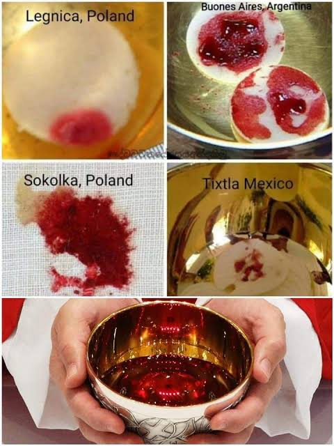

The Eucharistic Miracle of Buenos Aires refers to a series of events spanning from 1992 to 1996, where consecrated Hosts appeared to transform into bleeding human flesh. The most widely studied incident occurred on August 18, 1996, at the Parish of St. Mary.
The 1996 Event
After a Sunday Mass, a parishioner discovered a desecrated, soiled Host in a candle holder. Following standard church procedure for handling a desecrated Host, Fr. Alejandro Pezet placed it in a small container of water in the tabernacle to let it dissolve. When the tabernacle was opened on August 26, it was discovered that the Host had not dissolved but had instead transformed into a reddish, bloody substance that appeared to be human tissue.
Archbishop Bergoglio's Involvement
The local auxiliary bishop at the time, Jorge Mario Bergoglio (who later became Pope Francis), was notified. He instructed that the transforming Host be professionally photographed and kept in the tabernacle without making a public spectacle. For three years, the tissue did not decompose.
Scientific Investigation
In October 1999, Archbishop Bergoglio initiated a formal scientific investigation. A sample was sent to forensic experts in New York, including Dr. Frederick Zugibe, a renowned cardiologist and forensic pathologist. The scientists were kept in the dark about the origin of the sample (a blind study).
- Heart Tissue: The analyzed material was identified as muscular tissue from the myocardium (the heart muscle), specifically from the wall of the left ventricle—the section responsible for pumping blood to the entire body.
- Living White Blood Cells: The samples contained intact, active white blood cells. Because white blood cells deteriorate rapidly outside of a living organism, this indicated the tissue came from a living, pulsating heart at the time the sample was taken.
- Trauma: The white blood cells had penetrated the tissue, suggesting the heart had been subjected to severe stress or trauma, much like a person who has experienced significant chest trauma.
- Blood Type: The blood was determined to be Type AB, which interestingly matches the blood found on the Shroud of Turin and the ancient Eucharistic Miracle of Lanciano.